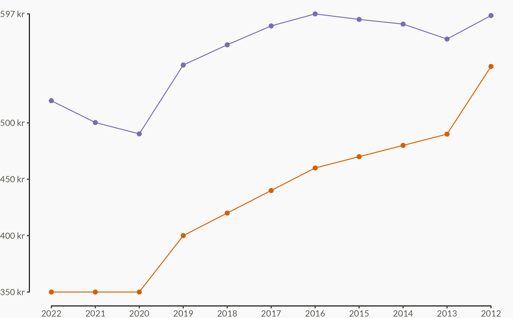

Fyrir hugsjónafólk sem hlær síðast
Skoðum gögn fasteignaskrár, sem flutti nýlega frá Þjóðskrá til HMS, um fyrstu kaupendur og komumst að því hvort meðalaldur þeirra hafi breyst, hversu stór hluti kaupenda eru fyrstu kaupendur, og hvernig kaupverði ber saman við ráðstöfunartekur ungs fólks.
Við vitum öll að Háskóli Íslands fær mest útgjöld frá ríkinu, en hvernig ber honum saman við aðra háskóla á hvern nemanda?
Stundum er talað um að við byggjum of mikið af fasteignum en oftast vill fólk meina að það sé mikill skortur. Hvað byggjum við mikið af fasteignum og hvað erum við mörg? Eru þetta nógu margar fasteignir?
Alþingi, ríkisstjórn og ríkið á helst að endurspegla þjóðina í öllum sínum kostum og göllum. Eitt málefni sem er okkur öllum mikilvægt er matur. Hvað finnst okkur gott að borða? Hvar finnst okkur gott að borða? Er ríkið sammála okkur í þessum málum? Hér skoða ég útgjöld ríkisins til veitingastaða, veisluþjónusta og mötuneyta.

Í ársreikningi Strætó bs. frá 2021 má finna áhugaverða myndræna framsetningu á tölum. Hér skoða ég hvað við getum lært af þessu og hvernig við getum hjálpað þeim að koma gögnunum ennþá betur til skila.